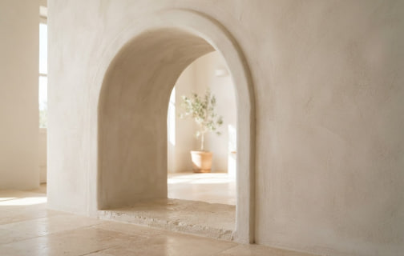
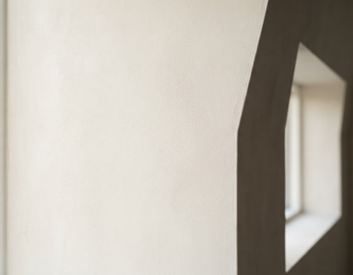

Рівні стіни. Чисті лінії. Основа бездоганного простору.
Plaster — команда майстрів, яка перетворює чорнові поверхні на готову основу для вашого інтер'єру. Виконуємо машинну штукатурку, декоративне оздоблення та вирівнювання стін у житлових і комерційних приміщеннях.

Матеріали та покриття
-
гіпсова штукатурка
Гладка основа під фарбування та шпалери.
-
цементно-піщана штукатурка
Міцне рішення для фасадів і вологих зон.
-
декоративна штукатурка
Фактури бетону, каменю та делікатного шовку.
Як ми працюємо
-
Оцінюємо основу
Заміри, перевірка стін і вибір матеріалу.
-
Готуємо поверхню
Ґрунтування, маяки та захист приміщення.
-
Наносимо й перевіряємо
Машинне нанесення та контроль площини.
Від ідеальної гладкості до виразної фактури. Приклади поверхонь та матеріалів.



Команда майстрів
Перші квартири, ручна робота та особиста відповідальність за кожну стіну.
Новий масштаб
Перехід на машинне нанесення. Більше об'єктів — та сама увага до деталей.
Мистецтво фактур
Декоративні покриття та співпраця з дизайнерами й архітекторами.
Професійний сервіс
Від невеликої бригади до провідної команди комплексного оздоблення.